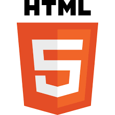

Résumé de la démarche
Au cours de mon parcours, j'ai eu l'occasion au cours de deux SAE (une en première année et une en deuxième année) de réaliser un portfolio présentant mon parcours. Le site que vous consultez actuellement est le résultat du projet de deuxième année, conçu pour valoriser mes acquis techniques et humains.
Consulter le code source sur GitHubEnvironnement et Outils

HTML5 / CSS3
Langages fondamentaux utilisés pour la structuration et la mise en forme personnalisée de l'interface utilisateur (UI).
GitHub Pages
Service d'hébergement utilisé pour la mise en ligne du site et le versionnage des différentes itérations du projet.
Méthodologie de création
1. Réflexion et Arrangement
Définition de la structure du site et de la charte graphique afin de garantir une navigation fluide et une présentation claire de mon profil professionnel.
2. Collecte de preuves
Sélection et synthèse des documents techniques (schémas, captures d'écran, rapports) justifiant les travaux réalisés lors des SAE.
3. Création Web (HTML/CSS)
Développement intégral du site en code pur, permettant une personnalisation totale et une optimisation du temps de chargement.
4. Analyse réflexive
Prise de recul sur chaque projet pour identifier les compétences acquises et les axes d'amélioration de mon parcours en BUT R&T.
Apprentissages Critiques ciblés
Le développement du portfolio valide plusieurs AC issus du référentiel R&T :
- AC13.04 Connaître l’architecture et les technologies d’un site Web.
- AC23.02 Développer une application à partir d’un cahier des charges donné, pour le Web ou les périphériques mobiles.
- AC12.05 Communiquer avec un tiers (client, collaborateur...) et adapter son discours et sa langue à son interlocuteur.
- AC21.06 Travailler en équipe pour développer ses compétences professionnelles (par le biais de l'auto-évaluation et du bilan).
Analyse réflexive
En deuxième année, j'ai choisi de remplacer mon portfolio effectué sur la plateforme Mahara par un site web hébergé grâce à Github Pages, ce qui m'a permis de personnaliser mon site comme je le souhaitais. J'ai pu ainsi faire le bilan de mes projets et compétences en cours de BUT, tout en consolidant mes connaissances en développement web front-end.